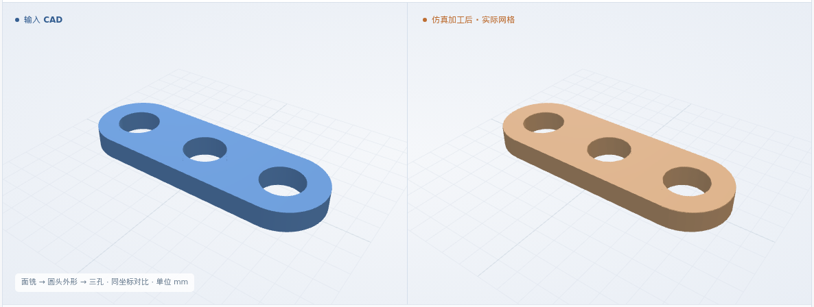

X 向圆头外形
4 项尺寸通过IoU 99.6512% · 本次重新生成 NC 并仿真

新增：在 NC 生成前绑定检验要求，加工结束后自动输出尺寸报告。
IoU = 原 CAD 与实际剩料的体积交集 / 并集
IoU 99.6512% · 本次重新生成 NC 并仿真
IoU 99.6489% · 本次重新生成 NC 并仿真

IoU 99.3114% · 本次重新生成 NC 并仿真

IoU 99.4644% · 本次重新生成 NC 并仿真

| 项目 / 基准 | 允许范围 | 采样范围 | 结果 |
|---|---|---|---|
| 总长（X） | 11.7–12.3 | 11.9926–11.9926 | 通过 |
| 总宽（Y） | 3.8–4.2 | 4.0000–4.0000 | 通过 |
| 低X端半径 | 1.8–2.2 | 1.9904–1.9983 | 通过 |
| 高X端半径 | 1.8–2.2 | 1.9914–1.9988 | 通过 |
| 高X端 → H3 | 1.8–2.2 | 1.9946–1.9946 | 通过 |
| H1 → H2（X投影） | 3.7–4.3 | 4.0000–4.0000 | 通过 |
| H2 → H3（X投影） | 3.7–4.3 | 4.0000–4.0000 | 通过 |
半径保护带 0.05 mm，其余 0.10 mm；采样范围加保护带后须落入允许范围。完整尺寸检验 · 原几何及工序检查 · IoU 依据
共 21 项新增尺寸、37 项原几何检查通过；7 个中间状态、53 项检查通过。复用既有 CAD，不增加支持的零件种类。本组为通用 XYZ、零工件偏置、零刀补、0.025 mm 网格，6061-T6 仅为材料标签。
本次真实工步剩料；播放间隔不代表加工耗时。
三维暂不可用，可查看上方图片或下载形状。
工艺卡与检验附件先由人工结构化录入；PDF 自动识别和工艺规划尚未接入。四份输入均已在本次 NC 生成前存档。
核对原 CAD、孔号、坐标基准、来源和公差；当前网格无法判定的公差在执行前拦截。
验收记录重新读取原 CAD，核对工步、刀具和 NC；尺寸要求继续绑定在执行方案中。
验收记录按原坐标比较实际剩料；保留原厚度、外形、孔及工序检查，另自动测量声明的尺寸。
验收记录16 项接口测试与 6 项原始表面保留检查通过，覆盖错误 CAD、孔号 / 基准、来源、无法满足的公差、附件变更及旧流程兼容；本轮没有新增错误 NC 去料。缺少判据仍为待判定，不会因程序跑完而通过。
首轮三孔件因重复三角面被尺寸入口拒绝。新增检查确认每个原始面仍由坐标及方向完全相同的面代表后，以同一输入重新运行通过；原失败和其余三例成功记录均保留。
22 项测试记录 · 保留的失败 · FreeCAD 环境检查 · 四例完整结果 · 归档清单 · 显示与本次结果的对应依据
当前接入范围：原坐标 X/Y 圆头外形与关联通孔的长度、宽度、端部半径、孔距及边距。保护带不是认证测量不确定度；整张真实工艺卡、夹具碰撞、材料物理、五轴和生产批准仍未完成。